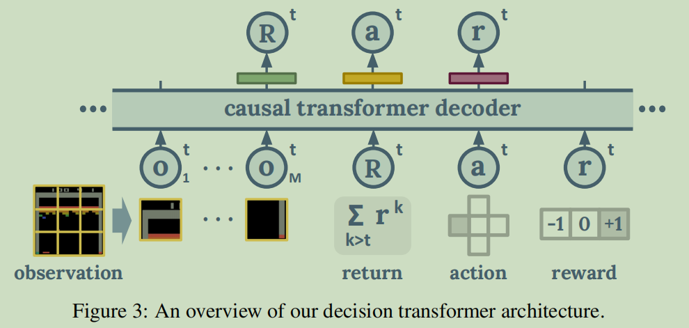
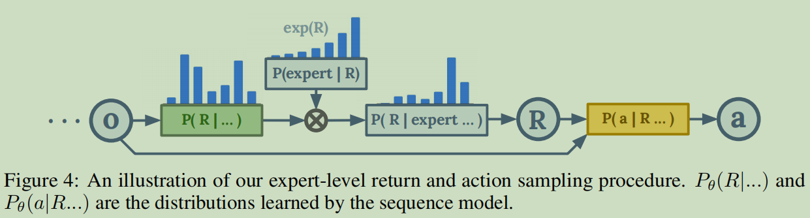

简介
研究人员提出了一种Multi-Game Decision Transformer通用结构，能够有效的执行多种任务和快速的学习决策新任务。
模型利用基于 transformer 的模型在 offline 情况下训练出在46个 atari 游戏中接近人类玩家水平的智能体。同时，该模型在视觉和语言任务中的某些方面，包括模型尺寸对表现的影响（文章使用 power-law 来说明）和通过 fine-tuning 在新任务上的快速适应能力上有着类似的趋势。老样子，经过各种实验比对，证实该模型拥有最棒的表现和扩展性。
强化学习序列模型
文章将离线强化学习过程看作是一个序列模型问题，以历史token $x_{<i}$ 作为条件来建模 $x_i$ 的概率分布 $P_\theta(x_i|x_{<i})$, 其中序列使用了以下定义形式:
\[x = <...,o_1^t, ..., o_M^t, \hat{R}^t, a^t, r^t, ...>\]

其中 $t$ 是当前时间步，$M$ 表示将每个 obs 图像观测切分的数量， $\hat{R}^t$表示 $t$ 时刻的累积回报。整个编码结构如上图所示。
文章使用标准交叉熵损失 cross-entropy loss来预测回报，动作以及奖励的离散化 token 训练模型。
Tokenization
回报 $\hat{R}^t$，动作$a^t$，以及奖励$r^t$均被离散 token 化:
- 动作在环境考虑中默认为离散化的
- 奖励转换为三元标量{-1, 0, +1}中
- 累积回报均匀的进行离散化
切割后的 obs petch 和可训练的位置编码（position encoding）被映射到线性编码空间，编码成为模型对应输入的token。
Train
文章提到模型的训练是通过一个现有的 Atari trajectories 离线数据集来进行训练的，该数据集包括一个DQN模型训练中采集到的所有行动轨迹（包含学习初期的）。研究人员从中选择了46个DQN表现明显高于随机策略的游戏数据，其中41个游戏用于训练，另外5个游戏用于验证该方法的泛化性，包括:
- Alien (Maze based)
- MsPacman (Maze based)
- Pong (ball tracking)
- SpaceInvaders (shoot vertically)
- StarGunner (shoot horizontally)
训练中的图像数据被切分为6x6个patch，每一个patch为14x14像素，用于训练的41种游戏数据总计 41 亿个step， 1600亿条token。
训练用的数据集包含了DQN所有的行为，文章说没有对其进行任何特殊过滤手段，原因主要有两点：1. 次优行为会产生更多的数据多样性可以帮助模型学习环境表达和糟糕行为导致的严重后果。2.很难从大量数据中给予明确的判定该数据是否是高质量数据。因此，从所有行为中训练模型，而在推理中生成专家行为。
Expert Action Inference
由于用于训练的数据不全是专家经验，因此很难通过模仿学习直接产生专家行为。文章提出在推理时使用一个分类器$P(expert^t|…)$ 在t时刻做出动作前来判断该动作是否是专家级别，根据贝叶斯规则，t时刻该专家级别行为的回报分布可以表示为:
\[P(R^t | expert^t, ...) \propto P_\theta(R^t|...)P(expert^t|R^t,...)\]作者提出定义一个与回报成比例的逆温度参数 $\kappa$ :
\[P(expert^t|R^t, ...) \equiv exp(\kappa R^t)\]按照这种思路我们可以构建出一个简单的自回归过程：

首先我们根据对数概率
\[\log{P_\theta(R^t|expert^t,...)} \rightarrow \log{P_\theta(R^t|...)} + \kappa R^t\]| 采样出一个合理的回报$R^t$，然后根据 $ P_\theta(a^t | R^t,…) $ 采样出动作，其中绿色框框$P_\theta(R | …)$和黄色框框$P_\theta(a | R,…)$是序列模型学习得到的分布输出。 |
总结
总的来说文章是一个将transformer结构使用在RL中的不错案例，不仅证明强化学习也能够将模型进一步加深，同时还证实了RL的多任务同模型的可行性。transformer在CV和NLP已经有不错的表现，期待继续在RL中深入，取得更好成就。